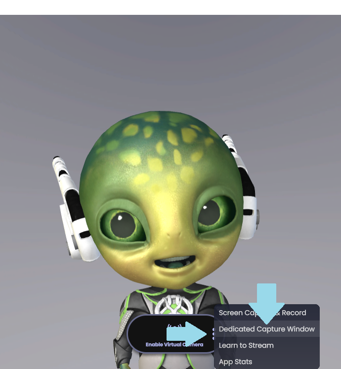
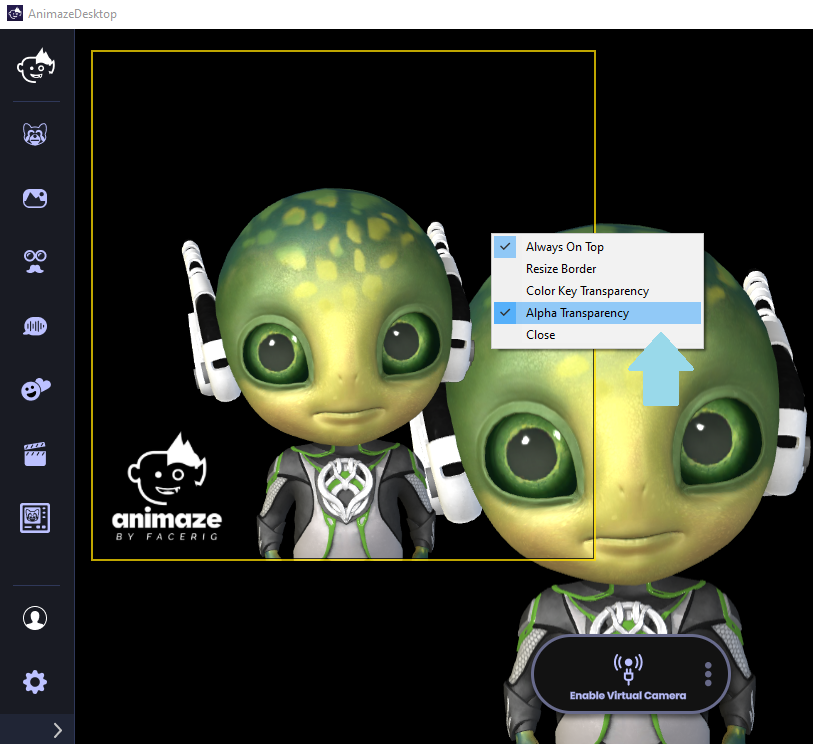
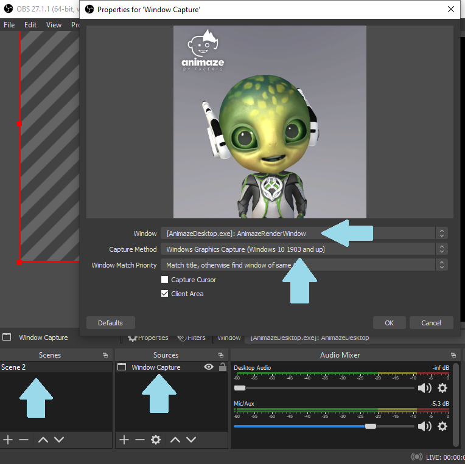
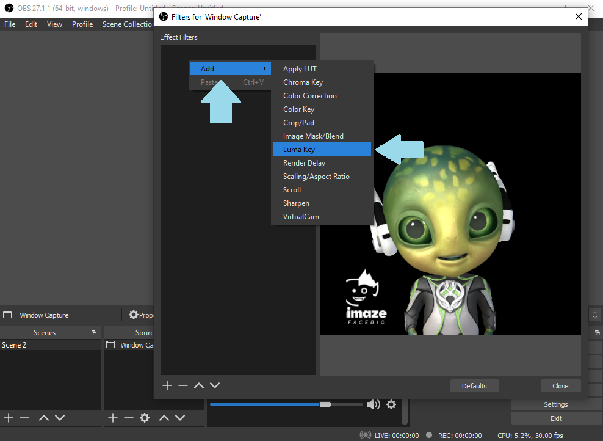
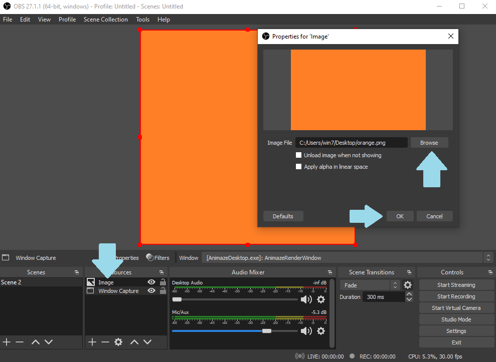
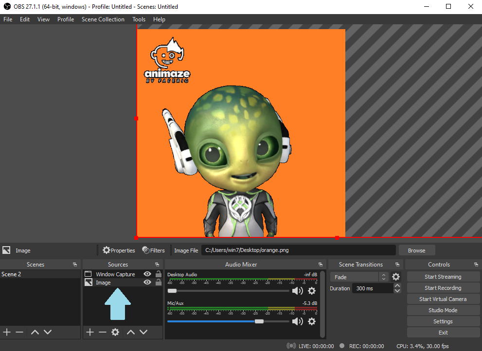
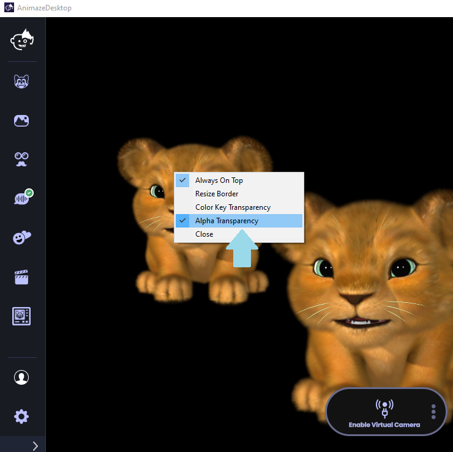
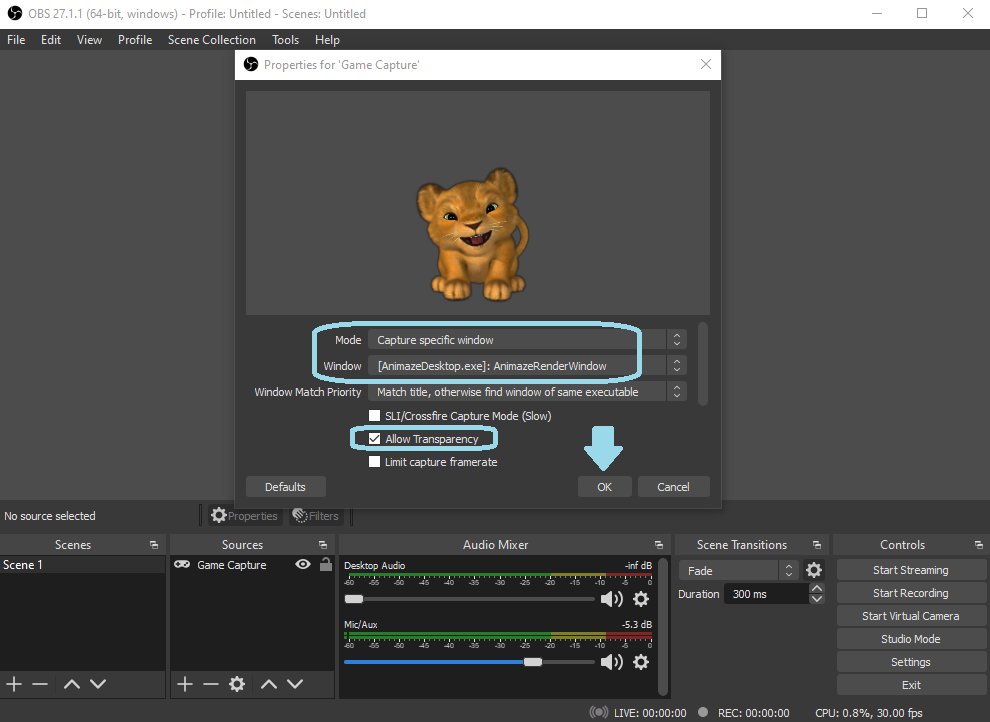
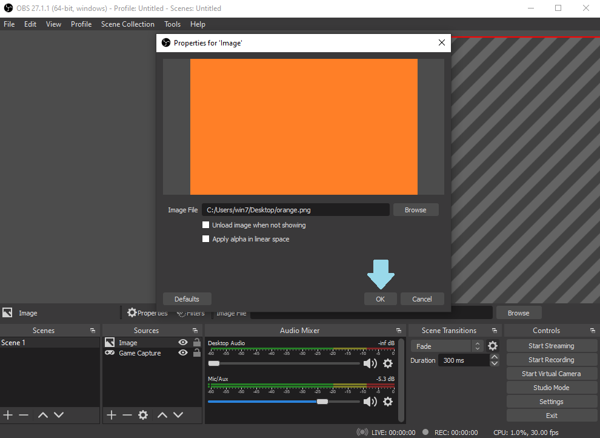
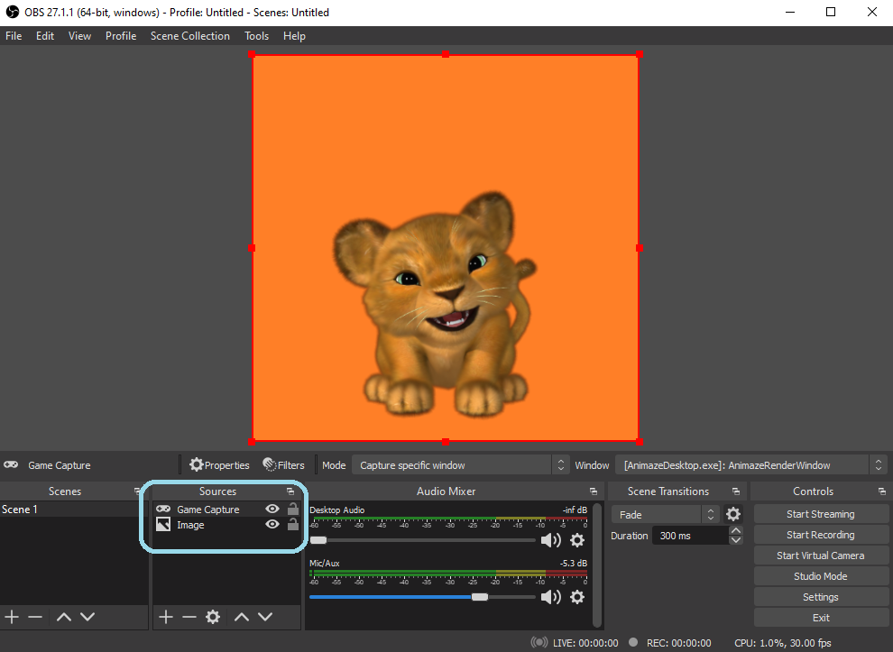

Dedicated Capture Window
You can open the dedicated capture window one of three ways:
1. Press Ctrl + S to open the Dedicated Capture Window
2. You can also find the Dedicated Capture Window in Account > Shortcuts
3. Or in the three dot menu, on the Enable Virtual Camera button

With the Dedicated Capture Window you can stream Animaze through OBS via either a Game Capture or a Display Capture source (we recommend using a Game Capture source) and create a setup with Alpha Transparency.
There are two methods to create a transparent background directly in the Dedicated Capture Window
Method 1: Luma key filter and the Dedicated Capture Window with Window Capture:
1. Right click on the Dedicated Capture Window and select Alpha Transparency

2. Open OBS, and create a Window Capture scene
3. Select the AnimazeRenderWindow as the input window
4. Under Capture Method, select Windows Graphics Capture

There are also two methods to create a transparent background directly in the dedicated capture window.
The first method will use the Luma Key Filter:
1. Go to OBS and right-click on the scene > Filters > Add Effect Filter > Add Luma Key filter

2. Create a new source and add an image / a new display capture etc.
-
For this tutorial we have added an image to use with the Dedicated Capture Window
-
Browse for your desired image and click OK to save it

3. In the sources section of OBS, drag and drop the Window Capture scene above the newly created scene, so that in the Sources field, the Image source appears under the Window Capture scene.

Method 2 - using a Game Capture source and the Dedicated Capture’s Window Alpha Transparency setting
-
Right click on the Dedicated Capture Window and select Alpha Transparency

-
Open OBS and create a Game Capture source
-
Under the Mode drop-down list, select Capture specific window
-
Under the Window drop-down list, select AnimazeRenderWindow
-
Tick the Allow Transparency box
-
Click OK to save the source

-
Create a new source in OBS (I set Image as a source and used the same orange picture as a background) and click OK to save it

-
Move the second source under the Game Capture source to layer the avatar on top of the image.
